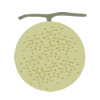

GAME-NEWTON 大山店
大会概要
あの伝説のイベントが8年ぶりにリザレクション！審判の日に集結せよ！
2005年に開催されたヴァンパイアセイヴァー3on3大会【Judgement Day】が、開催タイトルにヴァンパイアハンターも加わり、装いも新たに始動します。発売から16年以上経過した現在でも進化を続けている2タイトルの最先端の戦場、ヴァンパイアプレイヤーコミュニティ年間最大規模イベントを目指し、それに相応しいライブ空間を提供します。
- イベント名称
- Judgement Day
- 開催日時
- 2013年12月22日(日) 12:00〜20:00
- ゲームタイトル
- ヴァンパイアセイヴァー、ヴァンパイアハンター
- 参加費
- 1,500円（どのタイトルにもエントリーできます）
- 会場
- GAME-NEWTON 大山店（アクセス ）
※ 会場へのアクセスについての詳細は、こちらも御覧ください。
エントリー
当日エントリーも受け付けますが、イベントのスムーズな進行のために是非とも事前エントリーにご協力ください。セイヴァー部門の1人or2人チームでのエントリーも受け付けております。その場合、当日に3人チームになるように運営で斡旋を行います。
打ち上げについて
大会終了後に打ち上げを行います。当日の20:30開始で、会費は3,000円〜4,000円程度を予定しています。お気軽にご参加ください！ お申込みは、こちらから。
会費は、当日受付時に集めさせて頂きます。また、予約の関係で、打ち上げの参加お申込みは11月末までとさせて頂きます。
お申込みは締め切りました。お申込みの内容は、こちらから確認できますので、皆さん再度ご確認をお願いします。何かあれば@JudgementDay_1までご連絡ください。
※ 選手としてエントリーされる方は、エントリーフォームからそのままお申込み頂けます。

ライブ配信
12月22日12:00より、ジャッジメントデイ本戦の配信を、ニコ生公式で放送いたします！
全国各地より集結するダークストカーズの王となるのは果たして誰なのか？審判の日が迫る…！
最新情報
@JudgementDay_1 からのツイート大会ルール
- ジャンケン（セイヴァーはチームの代表者による）を行い、勝利した側がコンパネ選択権（1Por2P）を得る
- コンパネの不具合が発生した場合はプレイを中断し、即座に運営へ申し出てください。対応後、再試合とします。試合終了後の申告については認めません。また、虚偽の申告をする等、故意に進行を妨げる行為をした場合は失格とします
- ダブルKOは再試合とします
ハンター部門（シングル）
- 1on1シングルマッチ
- スピード：ターボ2固定
- その他は工場出荷デフォルト設定
- 使用キャラの変更不可
- 使用基盤：950302ver （フォボスのジャンプ中Pで転倒）
- ゲーム続行不能になるバグの利用は禁止
セイヴァー部門（3on3）
- 3on3チームマッチ
- スピード：ターボ3固定
- その他は工場出荷デフォルト設定
- 使用キャラの変更不可
- 特定技によるガード不能バグについては、広く認知されているので制限はありません。ただしゲーム続行不能になるバグの利用は禁止（アナカリスの無敵状態は可）
- 試合開始前に先鋒の選手を審判に申告する。その後の変更は認められません
- 勝ち抜き戦とし、中堅以降の順序は自由に決定できます
大会進行の流れ
○予選ブロック
- 1ブロック3枠のリーグ戦or4枠の変則トーナメントを行います
- 組み合わせはセイヴァーはくじ引きを行い、選ばれた順番に好きなブロックを指定（K-1方式）。ハンターは運営側で抽選を行い決定
- 1位のみが予選通過となります。リーグ戦で勝敗数が並んだ場合は再戦を行い、もう一度並んだ場合は各チーム代表者1名を選出して再戦。再度並んだ場合は前回とは別の代表者を選出して再戦します
- 2位はプレーオフへ進みます
○プレーオフ
- 決勝進出できる枠数および形式（リーグorトーナメント）は参加人数により変動します
○決勝トーナメント
- 8枠のシングルイリミネーショントーナメント
- 組み合わせはくじ引きを行い、くじの番号順に対戦相手チームを指名（待ちはできません）
- 指名された側は1回限り拒否権を行使できます
- 指名を拒否されたチームは指名順最後尾に移動します
タイムテーブル
※スケジュールは当日の進行状況により、変更となる場合があります。
前夜祭
毎年恒例の年末大会【Vampire Darkstalkers Carnival 2013】を前夜祭として開催します！
参加費：共通で300円（全タイトルでも1タイトルでも300円）
開催タイトルおよびタイムスケジュール
- 初代ヴァンパイア 14:00～
形式：1on1シングルイリミネーショントーナメント - ヴァンパイアセイヴァー2 15:00～
形式：1on1シングルイリミネーショントーナメント - ヴァンパイアセイヴァー 16:30～
形式：紅白戦
スタッフ一覧
-
 さかもと主催者
さかもと主催者セイヴァーおじさん。
-
 サス兄広報担当
サス兄広報担当サスカッチ使ってる兄ちゃん
-
だらチラシ担当
マルチな老害を目指しています。
-
T2yaサイトデザイン担当
子育て勢
-
デカメロンサイト構築・運営担当
ほそぼそとセイヴァーをプレイしつつ、運営スタッフとして活動している。